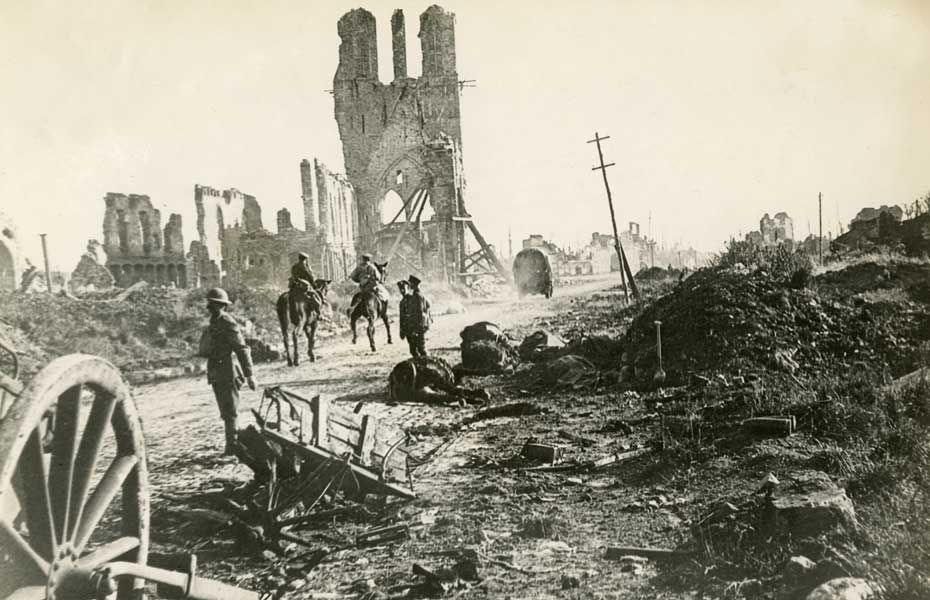

IF YOU CAN SEE THIS TEXT, YOU NEED TO ENABLE JAVASCRIPT FOR MANY FUNCTIONS OF THIS SITE
The treaty of Versailles was signed on June 28 1919, which formally made peace and would change the world with new rules to follow. It created nine new countries from the empires that fell during the war, it also created the first attempt at a global government with the League of Nations. The treaty was meant to prevent another war. It was a treaty that put all the blame of the war on Germany and made Germany pay for most of the atrocities of the war. The Germans were not invited in the creation of this peace treaty, and many Germans stood against it. The rest of this chapter will go over parts of this treaty, but also how some countries changed after the war.